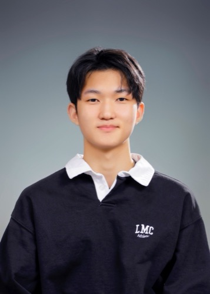

A bit more about how I think.

Andrew Joun Kim
Materials Science & Engineering + Biomedical Engineering, Carnegie Mellon University · Class of 2029
I'm Andrew Kim, from Seoul, South Korea, studying Materials Science & Engineering and Biomedical Engineering at Carnegie Mellon University. I'm passionate about leveraging biotechnology for clinical and medical solutions — the kind of work that sits right at the overlap of both my majors.
I've worked as a Laboratory Assistant at the CMU Cloud Lab, developed biomedical drone prototypes at NearthLab, and I'm currently building radiation-dosimetry simulations at Yonsei's Innovative Dosimetry Lab. I like building systems that make scientific discovery more efficient and accessible, and I'm always looking to pick up more corners of engineering.
Skills
Cell culture, spectroscopy, chromatography, PCR & gel electrophoresis · Python · BLAST/BLAT, ImageJ, SnapGene, UGENE UniPro
Outside the Lab
Varsity basketball captain & point guard (3× conference champions) · EMS responder-in-training at CMU · head percussionist, wind ensemble & orchestra · Editor-in-Chief, Dux Magazine · English, Korean, and conversational Mandarin